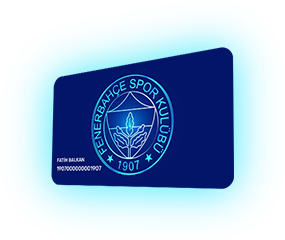

Değerli {user.firstName},
Yeni yılınızı kutlar;
Bu büyük kulübün tarihi boyunca olduğu gibi 2022 yılında da yanımızda
olan, hiçbir koşulda bizi yalnız bırakmayan siz büyük taraftarımıza
teşekkür ederiz.
Yeni yılda sizden aldığımız güç ile azim ve inançla çalışarak Çubuklumuz
için mücadelemizi sürdüreceğiz! Bu yolda sizden aldığımız destek yine en
büyük gücümüz olacak; hedeflerimize emin adımlarla yürüyeceğiz…
Cumhuriyet’in Feneri Fenerbahçemizin, Cumhuriyetimizin 100. yılında Ulu
Önder Mustafa Kemal Atatürk’ün izinde yaşayacağı nice başarılara,
kucaklayacağı nice şampiyonluklara…
Size, sevdiklerinize sağlıklı, mutlu ve huzurlu, Sarı Lacivert bir yıl
dileriz.

taraftarkart.fenerbahce.org